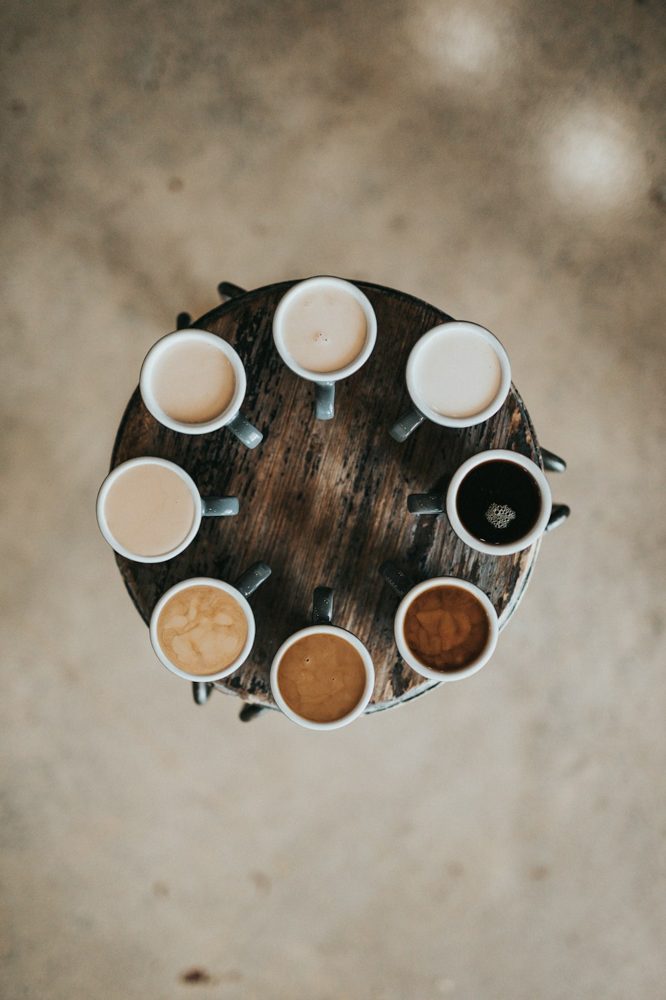

Quality
We choose thoughtfully and keep our standards uncomplicated.
Our story

About Univers du Café
Univers du Café is a fictional café concept created for a portfolio demonstration. It imagines a place where quality coffee, an easy atmosphere, and genuine care meet.
Every ingredient in the experience is considered: the beans we choose, the way we roast, the craft in each pour, and the time we make for guests to slow down.
We choose thoughtfully and keep our standards uncomplicated.
Small gestures, careful preparation, and ongoing curiosity.
A warm setting designed for connection, work, and rest.